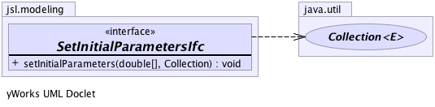

jsl.modeling
Interface SetInitialParametersIfc
public interface SetInitialParametersIfc
Implementors of this interface can use the supplied arguments
during initialization prior to running an experiment/replication.
It is up to implementors to describe how the parameters/Collection
will be used. The implementor should guarantee that the model element state
is valid prior to the running of a replication if this method is called
-
-

setInitialParameters
void setInitialParameters(double[] parameters,
java.util.Collection object)
Copyright © 2012 Manuel D. Rossetti. All Rights Reserved.